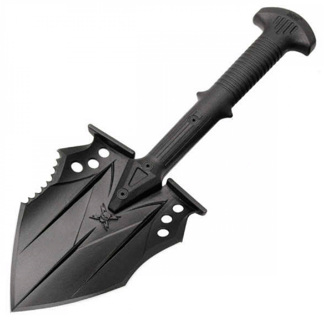
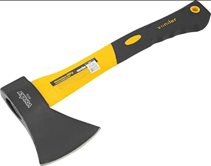
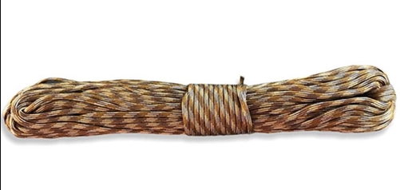
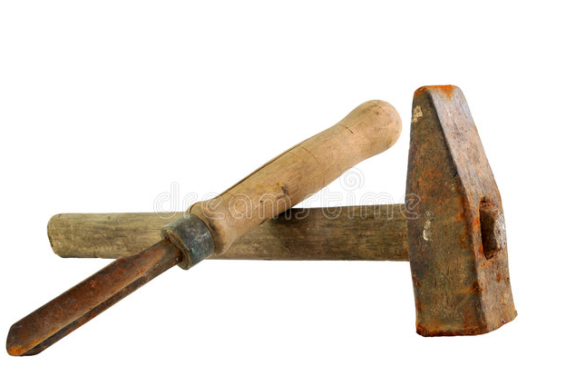
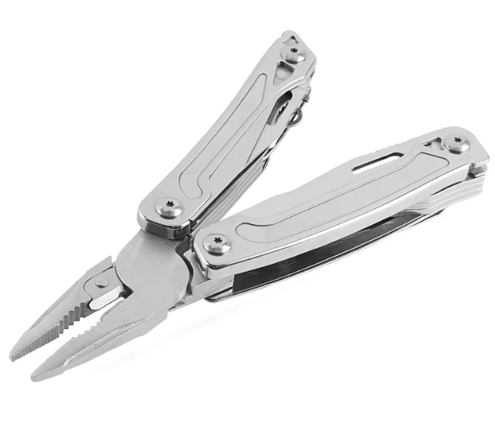
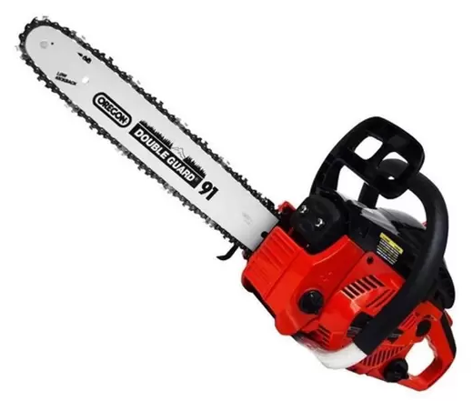
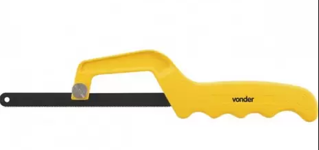

Em uma situação de sobreviência ou de evasão urbana, certos tipos de ferramentas são essenciais no quesito de construção. Onde no caso de uma reforma na fazenda, ou uma missão no mato, seja necessário construir um abrigo ou estruturas para tais ocasiões.
Nesta página temos as ferramentas essenciais recomendadas para estas situações.
No mato
Pá tática: Servindo tanto para sobreviência quanto para contrução, uma pá tática tem inúmeras funcionalidades graças ao seu formato multifunções podendo atuar como uma pá, machado, foice, ou dependendo do modelo, uma picareta.

Machadinha: Ferramenta demandada para qualquer tipo de construção para cortar vigas de madeira.

Corda: Muito útil para remendas, e qualquer tipo de amarras em geral, tanto para construção ou para missões na mata.

Martelo e Cinzel: Duas ferramentos muito úteis para auxiliar em fixagem ou sustentação de um abrigo improvisado ou alguma suspensão de uma estrutura.

Alicate: Desde um alicate comum até um alicate multifunções, a ferramente é uma grande adição para pequenas situações de construção.

Construções em geral
Além das ferramentas acima, algumas também podem ser complementadas para construções maiores ou até em meios rurais.
Moto-serra: Não tão viável para quem não tem condições de comprar uma, porém é uma ferramenta útil para facilitar o corte de troncos de árvores no mato.

Serrinha: Se não tiver condições de uma serra elétrica ou uma serra maior, esta ferramenta pode quebrar o galho para algumas situações que envolvam marcenaria.
